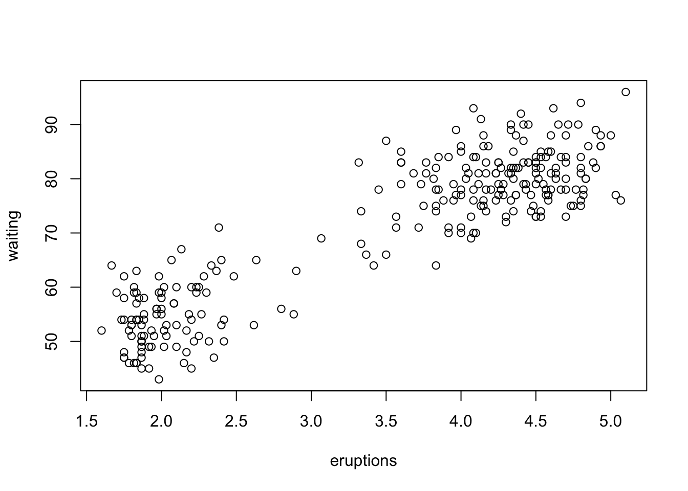
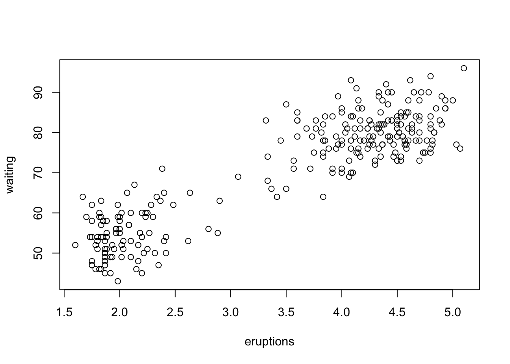
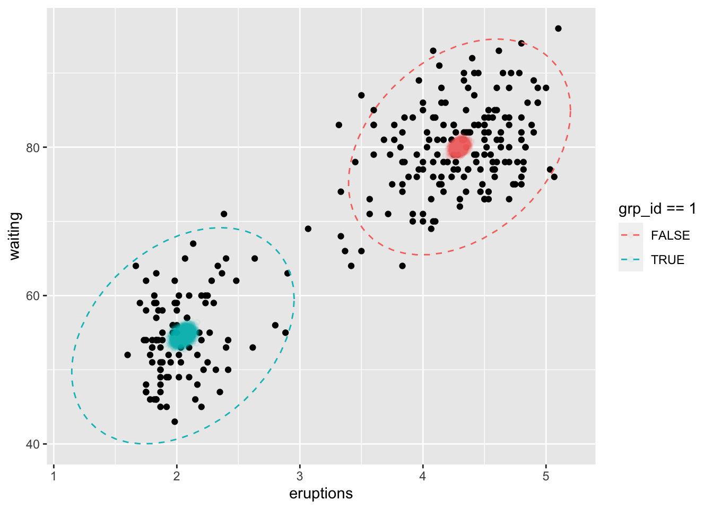

data(faithful)
plot(faithful)
OK, let’srun an example!
Remember that we just said there are fundamentally three steps to executing a model:
Well, there may as well be a double step zero that comes before we can consider executing a: collect data and conceive an appropriate model. We’ll use a simple example - see the Stan documentation for a long list of examples and case studies.
Every installation of R comes with a data set called faithful, which reports on the interval and duration of eruptions of the Old Faithful geyser in Yellowstone National Park, Wyoming. Let’s load the data and look at it.
data(faithful)
plot(faithful)
It’s apparent from the plot that there is a bimodal distribution, with some eruptions lasting longer and with a longer duration between them, and another cluster of shorter eruptions with a shorter duration between them. We will model the eruptions as a mixture of two bivariate normal distributions. We’ll define the two components of the mixture to have the same covariance but different centers.
A Stan model has sections for:
dataDecribes the data that will feed the model. Every data variable must match the name and type of an entry in a list that is passed to the model’s sample() method.
transformed dataDefine new variables that are used like data, but are calculated from the data rather than passed in. Bcause these calculations only depend on the data (which are fixed) they only happen once.
parametersDefines parameters that are used in the model section.
transformed parametersDefines variables that are functions of the parameters. You don’t specify a prior distribution for a transformed parameter because it is implied by the parameter(s) that are used in the calculation.
modelIn this code block, define the prior distributions of all parameters and the relationship between parameters and data.
generated quantitiesSummary outputs that are calculated once per sample (most other quantities are calculated once per HMC step, of which there are several per sample.)
This Stan code defines the bivariate mixture model. Copy, paste, and save it to a file called bivariate_mixture.stan.
data {
int<lower=1> N;
vector[N] duration;
vector[N] interval;
}
transformed data{
array[N] vector[2] y;
for (i in 1:N) {
y[i] = [duration[i], interval[i]]';
}
}
parameters {
// centers of the clusters:
ordered[2] loc_x;
vector[2] loc_y;
// standard deviation and correlation within the clusters
vector<lower=0>[2] std;
real<lower=0> cor;
// mixing proportions:
vector<lower=0, upper=1>[N] p;
}
transformed parameters{
cov_matrix[2] Sigma;
// populate the covariance matrix
Sigma[1,1] = std[1]^2;
Sigma[1,2] = std[1] * std[2] * cor;
Sigma[2,1] = Sigma[1,2];
Sigma[2,2] = std[2]^2;
}
model {
// define priors:
cor ~ exponential(1);
std ~ exponential(1);
loc_x ~ student_t(6, 0, 10);
loc_y ~ student_t(6, 0, 10);
p ~ beta(1, 1);
// define the model:
for (i in 1:N) {
target += log_mix(p[i],
multi_normal_lpdf(y[i] | [loc_x[1], loc_y[1]]', Sigma),
multi_normal_lpdf(y[i] | [loc_x[2], loc_y[2]]', Sigma));
}
}
generated quantities {
// take posterior predictive samples of group assignment
// and the interval/duration pair.
array[N] int grp_id;
array[N] vector[2] y_pred;
// loop over the rows of data
for (i in 1:N) {
// estimate which mode this eruption belongs to
grp_id[i] = bernoulli_rng(p[i]);
// depending on which mode, sample from one of the
// two multivariate normal distributions of the mixture.
if (grp_id[i] == 1) {
y_pred[i] = multi_normal_rng([loc_x[1], loc_y[1]]', Sigma);
} else {
y_pred[i] = multi_normal_rng([loc_x[2], loc_y[2]]', Sigma);
}
}
}Here’ we’ll compile the Stan model.
mix_model = cmdstan_model(stan_file="stan/bivariate_mixture.stan")Warning in readLines(stan_file): incomplete final line found on
'stan/bivariate_mixture.stan'The model expects three pieces of data: intervalanddurationare vectors of the time between and during eruptions of Old Faithful, respectively. AndN` is the length of each of those two vectors.
# create a list of data for the model
stan_data = list(
N = nrow(faithful),
duration = faithful$eruptions,
interval = faithful$waiting
)Now the magic happens: We set Stan loose with data and a model, and will sample the posterior distributions of the model’s parameters. The arguments to thesample function are used to run the Markov chains in parallel, and to take 6000 samples from each chain with the first 5000 of each being warmup samples as the model converges to the posterior. When you run this code, you’ll see a looooooong stream of text that describes the ongoing sampling and any problems.
# sample the posterior for the model, given the data
mix_fit = mix_model$sample(
data=stan_data,
chains=4,
parallel_chains=4,
iter_warmup=5000,
iter_sampling = 1000)
)# load the saved posterior fit
load(file="data/mix_fit.rda")You have a lot of options for how to do summaries, visualization, and diagnostics. I’ll just show some very basic stuff but you should check out Statistical Rethinking or Bayesian Data Analysis to learn more about creating and interpreting Bayesian models.
The first step is probably to summarize the posterior samples. Look for Rhat near one, effective sample size near 4000 (1000 samples x 4 chains)
You could also directly inspect the posterior samples:
# the posterior package provides the function `as_draws_df()`
library(posterior)This is posterior version 1.4.1
Attaching package: 'posterior'The following objects are masked from 'package:stats':
mad, sd, varThe following objects are masked from 'package:base':
%in%, match# extract posterior samples
mix_df = as_draws_df(mix_fit)
head(mix_df)# A draws_df: 6 iterations, 1 chains, and 1100 variables
lp__ loc_x[1] loc_x[2] loc_y[1] loc_y[2] std[1] std[2] cor
1 -1681 2.1 4.2 55 80 0.37 6.0 0.23
2 -1679 2.0 4.3 54 80 0.37 5.8 0.38
3 -1666 2.0 4.3 55 80 0.38 6.3 0.34
4 -1659 2.1 4.2 55 80 0.35 5.6 0.34
5 -1678 2.1 4.3 55 80 0.37 6.1 0.32
6 -1677 2.0 4.3 54 80 0.35 5.6 0.32
# ... with 1092 more variables
# ... hidden reserved variables {'.chain', '.iteration', '.draw'}Here I’ve created a combined plot of the raw data, posterior samples of the centers of the two mixture components, and a contour of the 95% credible interval of the posterior predictive distribution for each component. Looks OK to me!
Note that I am extracting posterior samples from the fitted model object via a couple of custom functions from a package called workshp.stan - you can install it via remotes::install_github("d-rug/workshop_stan")
library(dplyr)
Attaching package: 'dplyr'The following objects are masked from 'package:stats':
filter, lagThe following objects are masked from 'package:base':
intersect, setdiff, setequal, unionlibrary(tidyr)
library(ggplot2)
library(workshop.stan)
# call functions that get the posterior and
# posterior predictive samples for plotting
posterior_mix = old_faithful_posterior_samples(mix_df)Warning: Dropping 'draws_df' class as required metadata was removed.
Warning: Dropping 'draws_df' class as required metadata was removed.Joining with `by = join_by(`Sigma[1,1]`, `Sigma[2,1]`, `Sigma[1,2]`,
`Sigma[2,2]`, `std[1]`, `std[2]`, .chain, .iteration, .draw, grp_id)`post_pred_samples = old_faithful_posterior_predictive_samples(mix_df)Warning: Dropping 'draws_df' class as required metadata was removed.
Warning: Dropping 'draws_df' class as required metadata was removed.
Warning: Dropping 'draws_df' class as required metadata was removed.
Warning: Dropping 'draws_df' class as required metadata was removed.Joining with `by = join_by(.chain, .iteration, .draw, indx)`Joining with `by = join_by(.chain, .iteration, .draw, indx)`
Joining with `by = join_by(.chain, .iteration, .draw, indx)`# plot the data, with posterior samples of the cluster centers
# and contours for the posterior predictive 95% intervals
ggplot(as.data.frame(faithful)) +
aes(x=eruptions, y=waiting) +
geom_point() +
geom_point(data=posterior_mix,
mapping=aes(x=x, y=y, color=grp_id==1),
alpha=0.05) +
stat_ellipse(data=post_pred_samples,
mapping=aes(x=xloc, y=yloc, color=grp_id==1),
linetype=2,
type='norm')